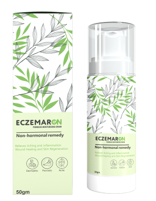

परजीवियों के खिलाफ प्रभावी सुरक्षा



"यह संक्रामक नहीं है: मैं सोरायसिस के साथ कैसे रहता हूं और इससे मुझे क्या मदद मिलती है"
एक ऐसे व्यक्ति के रूप में जो पहले से जानता है कि सोरायसिस क्या है, मैंने अपने अनुभव साझा करने का फैसला किया। इस ब्लॉग में आप जानेंगे कि इस त्वचा रोग से पीड़ित व्यक्ति की मदद कैसे करें, सोरायसिस की समस्या हमेशा सुंदरता के बारे में क्यों नहीं होती, और वास्तव में क्या मदद कर सकता है। सोरायसिस एक त्वचा रोग है जो पुरानी सूजन को भड़काता है। इसकी वजह से, त्वचा पर सामान्य से 25 गुना अधिक कोशिकाएं बनती हैं: कोशिकाएं जल्दी बढ़ती हैं और जल्दी मर जाती हैं, जिससे सोरायटिक सजीले टुकड़े बन जाते हैं।

यह सब कब प्रारंभ हुआ
मेरी उम्र 42 साल है, मैं अपनी पत्नी और बेटे के साथ रहता हूं। मैं
एक शिक्षक हूँ, और एक बच्चे के रूप में, मैंने एक अंतरिक्ष यात्री,
कप्तान या पायलट बनने का सपना देखा था। आपको इस जानकारी की
आवश्यकता नहीं है, लेकिन आइए परिचित हो जाएं। मेरा नाम दिपाल है।
ग्रेजुएशन के दौरान 2006 में सोरायसिस पहली बार मेरे सामने आया।
मुझे लगता था कि यह निश्चित रूप से तनाव के कारण है - उस समय मेरी
दुनिया में सब कुछ ढह गया: मेरे पिता की मृत्यु हो गई, मेरे पास
पैसे नहीं थे, और प्रेमिका के साथ सब कुछ ठीक नहीं चल रहा था। यह
मेरे जीवन का एक भयानक दौर था। अब भी, मेरे लिए इसे याद रखना कठिन
है। तब मेरे साथ बहुत बुरी बातें हुईं।
सबसे पहले, लगभग 8 सेमी आकार की एक पप्पड़ी निकली। फिर एक और दिखाई
दिया। मुझे अपने बाल बढ़ाने पड़े ताकि प्लाक दिखाई न दें। मैं बहुत
असहज था, और मैं नहीं चाहता था कि लोग मुझसे डरें। फिर मैंने केवल
लंबी बाजू वाले कपड़े पहनना शुरू किया और लगातार इन प्लाक से
छुटकारा पाने के लिए अलग-अलग तरीके आजमाए।
मनोवैज्ञानिक तनाव
मैं सफेद कपड़े नहीं पहन सकता था- मेरे कपड़ों पर खून के धब्बे थे।
मुझे लगता है कि आप सहमत होंगे कि दृश्य बहुत आकर्षक नहीं है। मैं
ऐसे आदमी से भी दूर रहूंगा जिसके कपड़ों पर खून के धब्बे हों।
लोगों ने हर बार मुझ पर शत्रुतापूर्ण नज़र डाली। मेरी प्रेमिका को
लगातार कहा जाता था कि यह संक्रामक है और उसे मुझे छोड़ना होगा
वरना वह खुद संक्रमित हो जाएगी। नाई की दुकान में नाई इन प्लाक को
देखकर डर गया; उसके हाथ भी काँप रहे थे। मुझे उसे लंबे समय तक
समझाना पड़ा कि यह संक्रामक नहीं है। काफी समझाने के बाद ही वह
शांत हुआ। मैं किसी को दोष नहीं देता; मैं सब कुछ समझता हूँ। लेकिन
मैंने अलग तरह से प्रतिक्रिया दी।
मैं कई बार हंसा और दूसरों पर गुस्सा हो गया। यह इस बात पर निर्भर
करता है कि मैंने अपनी त्वचा रोग के बारे में किससे टिप्पणियां
सुनीं और लोगों ने इसे किस तरह से कहा - अगर मेरे दोस्तों ने मजाक
में मुझे बांबी द फॉन (धब्बों के कारण) कहा, तो निश्चित रूप से
मुझे हंसी आई। मैं समझ गया कि ये अच्छे चुटकुले थे। लेकिन अगर किसी
अजनबी ने कहा, "अरे, बाल कटवा लो। तुम बेघर लग रहे हो," और वे मुझ
पर हँसे, तो मुझे बहुत गुस्सा आया।
मेरा विश्वास करो, यह सौंदर्यशास्त्र के बारे में नहीं है यदि आपके
पास सोरायसिस वाले करीबी लोग हैं, तो मैं आपको सलाह देता हूं कि आप
इस बीमारी पर ध्यान न दें और इन लोगों से अधिक सावधान रहें। उनकी
देखभाल करें, अगर उनकी त्वचा प्लाक से गिर रही है तो आप वैक्यूम
करने में मदद कर सकते हैं।
समाज को एक दूसरे के प्रति अधिक चौकस और सहिष्णु होने की आवश्यकता
है। जो लोग वर्तमान में सोरायसिस से जूझ रहे हैं, उन्हें हार नहीं
माननी चाहिए, क्योंकि सोरायसिस कोई वाक्य नहीं है।
सोरायसिस के साथ, आप ज्यादा नहीं खा सकते हैं क्योंकि कई खाद्य
पदार्थ रोग को बढ़ा सकते हैं। एक व्यक्ति तभी बेहतर महसूस कर सकता
है जब वह समुद्र में हो। समुद्र लक्षणों से राहत देता है। हालाँकि,
हर कोई मानता है कि बहुत से लोगों को हर समय समुद्र में रहने का
अवसर नहीं मिलता है।
युवावस्था में, सोरायसिस से पीड़ित व्यक्ति सौंदर्यशास्त्र के बारे
में चिंतित होता है। लोग शिकायत करते हैं कि उन्हें एक जोड़ा नहीं
मिल रहा है, कि लोग पूछते दिखते हैं और सोचते हैं कि यह संक्रामक
है। लेकिन सोरायसिस एक कपटी त्वचा रोग है। उम्र के साथ, यह केवल
बिगड़ जाती है। सोरायसिस जोड़ों को प्रभावित करता है, और एक
व्यक्ति विकलांग हो जाता है। सोरायसिस वाले लगभग एक तिहाई लोगों को
सोरियाटिक गठिया हो सकता है, जो मस्कुलोस्केलेटल सिस्टम की एक
पुरानी भड़काऊ बीमारी है। यानी ऐसे लोगों का चलना मुश्किल होता है।
मैं भाग्यशाली था और इस बीमारी ने मुझे प्रभावित नहीं किया।

प्रभावी तरीका
बेशक, योग्य विशेषज्ञों से संपर्क करना बहुत महत्वपूर्ण है, जो यह
बता पाएंगे कि यह बीमारी क्यों दिखाई दी और क्या आपके जीवन को आसान
बना सकता है। मैंने उस समय ऐसा ही किया और मुझे बहुत खुशी है कि
डॉक्टर ने मेरी मदद की। उन्होंने मुझे क्रीम इस्तेमाल
करने की सलाह दी। डॉक्टर ने निम्नलिखित कहा:
"यह क्रीम त्वचा पर सोरायसिस की किसी भी अभिव्यक्ति को कम करने में
मदद करती है, एपिडर्मिस की परतों में गहराई से प्रवेश करती है। यह
निश्चित रूप से आपकी मदद करेगी, क्योंकि सेलुलर स्तर पर, यह क्रीम
ऊतकों को सुधार करने में मदद करती है, त्वचा की अखंडता को सुधार
करती है और त्वचा की कोशिका विभाजन गतिविधि को कम करती है। अपने
प्लाक पर दिन में 2-3 बार लगाने की कोशिश करें, और आप
बहुत जल्दी परिणाम देखेंगे।"
सोरायसिस के लिए मलहम का विकल्प छोटा है। इस बीमारी से पीड़ित लोग
इस बात से अच्छी तरह वाकिफ हैं। अनिवार्य रूप से, ये हार्मोनल
दवाएं हैं जो एलर्जी और अन्य दुष्प्रभाव पैदा कर सकती हैं।
लेकिन इस सोरायसिस क्रीम ने मेरी बहुत मदद की। इसका लाभ यह है कि
यह एक गैर-हार्मोनल कॉम्प्लेक्स है। इसमें चाय के पेड़ का तेल,
मंजिष्ठा और अन्य प्राकृतिक तत्व शामिल हैं। डॉक्टर ने कहा कि यह
क्रीम न केवल सोरायसिस बल्कि एक्जिमा, डर्मेटाइटिस, दाद और
मुंहासों में भी मदद करेगी।
इस क्रीम के लिए धन्यवाद, मुझे अंत में खुजली महसूस नहीं होती है,
और मेरी त्वचा भी साफ़ रहती है। शायद यह इसलिए है क्योंकि
रसायनों और सिंथेटिक स्टेरॉयड से मुक्त है। यह नमी देता है, पोषण
देता है और सोरायसिस के साथ जीवन को बहुत आसान बनाता है।
आप को आधिकारिक वेबसाइट पर 50% छूट के साथ ऑर्डर कर सकते
हैं। प्रस्ताव सीमित समय के लिए वैध है।